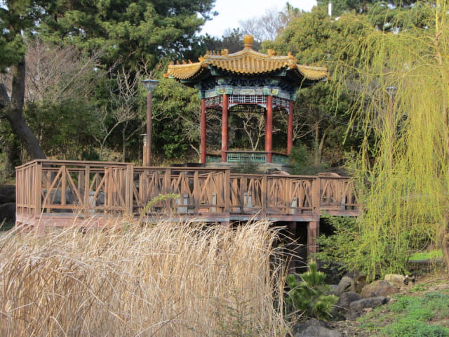
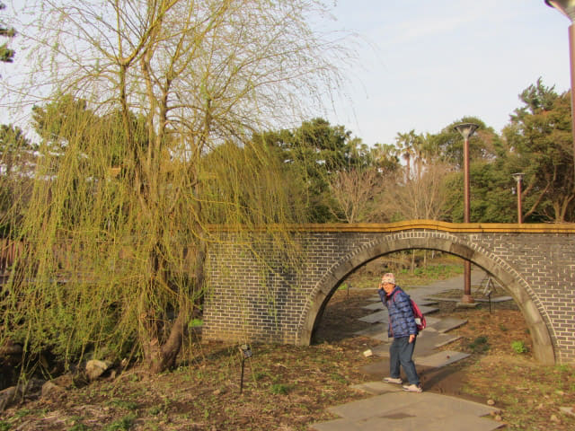

我們在下午三時五十分從鳥島開始出發, 循新緣橋, 跨越七十里橋, 沿西歸浦港走, 穿過懸崖上的子古里文化藝術公園, 步行了約個半鐘, 終於看到徐福公園 (서복공원 Seobok Park)入口的牌樓。
徐福傳說
據說徐市(徐福 )奉秦始皇之命, 帶同三千童女尋找長生不老藥, 來到濟州島, 在正房瀑布登岸, 攀登高山後無功而返, 最後西行回國, 離開前在正房瀑布絕壁上刻了「徐市過之」四個大字, 而西歸浦的名稱也是取自徐福由此西歸回國之意。

徐福公園入口不遠處有徐福展覽館, 不過要收門票的, 不參觀了!
徐福公園是免費參觀的。公園面積很大, 環境也相當優美, 這裡也是偶來6號小路的其中一段。這時天色漸漸好轉, 可惜已經是黃昏時分。
公園步道兩旁有徐福石像, 還有關於徐福故事的石刻。
相信為了配合徐福這傳說, 公園的設計充滿中國風格, 古色古香。


在公園內的庭園流連了一會, 繼續沿步道向前走。沿途的壁畫就好像一個故事, 頗有趣的。
從公園另一邊的石做牌樓離開, 就這樣遊覽完徐福公園。